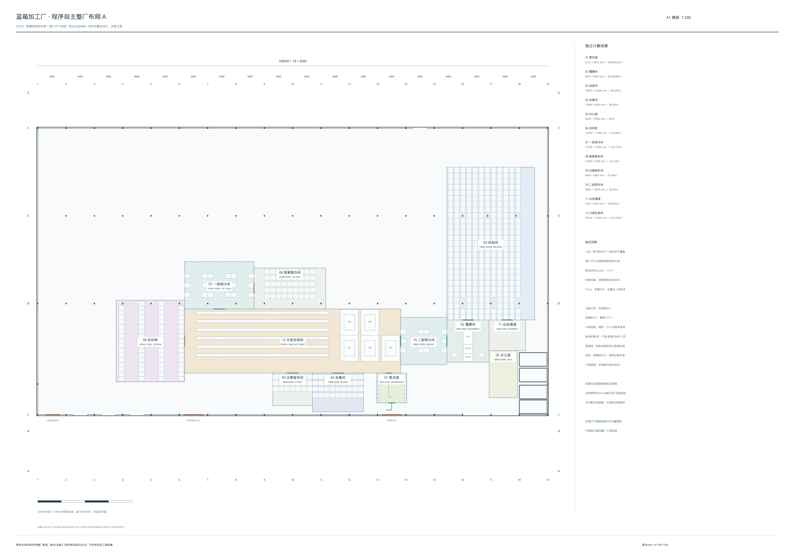
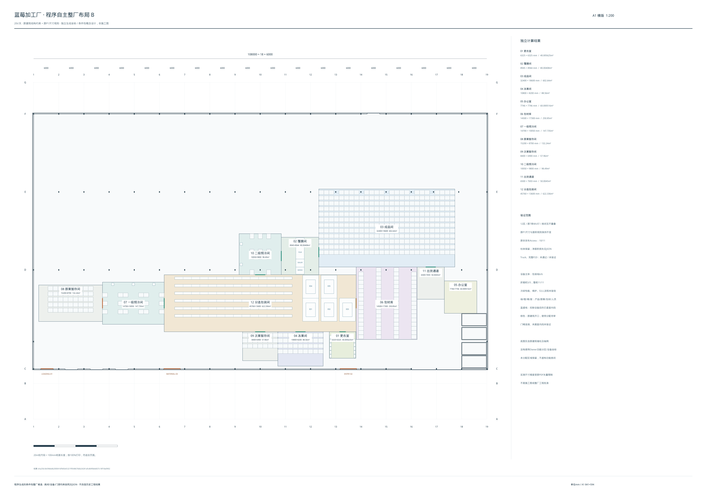

原建筑结构与P1需求驱动的独立生成。以下为条件性候选，未宣称完整P2D或实际工程批准。原房间、设备坐标没有作为生成输入。
方案比较与限制 · 设备坐标 · 生成记录 · 可复算输入
12区 / MUST 7条；非货车Access 11/11。完整P2D和整厂批准未取得。
A1 PDF · 可缩放SVG · 高清PNG · 原始JSON

12区 / MUST 7条；非货车Access 10/11。完整P2D和整厂批准未取得。
